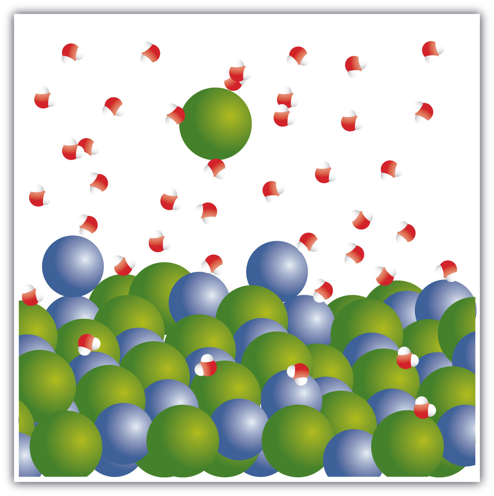

For single-replacement and double-replacement reactions, many of the reactions included ionic compounds: compounds between metals and nonmetals or compounds that contained recognizable polyatomic ions. Now we take a closer look at reactions that include ionic compounds.
One important aspect about ionic compounds that differs from molecular compounds has to do with dissolving in a liquid, such as water. When molecular compounds, such as sugar, dissolve in water, the individual molecules drift apart from each other. When ionic compounds dissolve, the ions physically separate from each other. We can use a chemical equation to represent this process—for example, with NaCl:
When NaCl dissolves in water, the ions separate and go their own way in solution; the ions are now written with their respective charges, and the (aq) phase label emphasizes that they are dissolved (Figure 4.3 "Ionic Solutions"). This process is called dissociationThe process of an ionic compound separating into ions when it dissolves.; we say that the ions dissociate.
Figure 4.3 Ionic Solutions
When an ionic compound dissociates in water, water molecules surround each ion and separate it from the rest of the solid. Each ion goes its own way in solution.
All ionic compounds that dissolve behave this way. (This behavior was first suggested by the Swedish chemist Svante August Arrhenius [1859–1927] as part of his PhD dissertation in 1884. Interestingly, his PhD examination team had a hard time believing that ionic compounds would behave like this, so they gave Arrhenius a barely passing grade. Later, this work was cited when Arrhenius was awarded the Nobel Prize in Chemistry.) Keep in mind that when the ions separate, all the ions separate. Thus, when CaCl2 dissolves, the one Ca2+ ion and the two Cl− ions separate from each other:
That is, the two chloride ions go off on their own. They do not remain as Cl2 (that would be elemental chlorine; these are chloride ions); they do not stick together to make Cl2− or Cl22−. They become dissociated ions in their own right. Polyatomic ions also retain their overall identity when they are dissolved.
Write the chemical equation that represents the dissociation of each ionic compound.
Solution
Not only do the two sodium ions go their own way, but the sulfate ion stays together as the sulfate ion. The dissolving equation is
Na2SO4(s) → 2Na+(aq) + SO42−(aq)Test Yourself
Write the chemical equation that represents the dissociation of (NH4)2S.
Answer
(NH4)2S(s) → 2NH4+(aq) + S2−(aq)
When chemicals in solution react, the proper way of writing the chemical formulas of the dissolved ionic compounds is in terms of the dissociated ions, not the complete ionic formula. A complete ionic equationA chemical equation in which the dissolved ionic compounds are written as separated ions. is a chemical equation in which the dissolved ionic compounds are written as separated ions. Solubility rules are very useful in determining which ionic compounds are dissolved and which are not. For example, when NaCl(aq) reacts with AgNO3(aq) in a double-replacement reaction to precipitate AgCl(s) and form NaNO3(aq), the complete ionic equation includes NaCl, AgNO3, and NaNO3 written as separated ions:
Na+(aq) + Cl−(aq) + Ag+(aq) + NO3−(aq) → AgCl(s) + Na+(aq) + NO3−(aq)This is more representative of what is occurring in the solution.
Write the complete ionic equation for each chemical reaction.
Solution
For any ionic compound that is aqueous, we will write the compound as separated ions.
The complete ionic equation is
K+(aq) + Br−(aq) + Ag+(aq) + C2H3O2−(aq) → K+(aq) + C2H3O2−(aq) + AgBr(s)The complete ionic equation is
Mg2+(aq) + SO42−(aq) + Ba2+(aq) + 2NO3−(aq) → Mg2+(aq) + 2NO3−(aq) + BaSO4(s)Test Yourself
Write the complete ionic equation for
CaCl2(aq) + Pb(NO3)2(aq) → Ca(NO3)2(aq) + PbCl2(s)Answer
Ca2+(aq) + 2Cl−(aq) + Pb2+(aq) + 2NO3−(aq) → Ca2+(aq) + 2NO3−(aq) + PbCl2(s)
You may notice that in a complete ionic equation, some ions do not change their chemical form; they stay exactly the same on the reactant and product sides of the equation. For example, in
Na+(aq) + Cl−(aq) + Ag+(aq) + NO3−(aq) → AgCl(s) + Na+(aq) + NO3−(aq)the Ag+(aq) and Cl−(aq) ions become AgCl(s), but the Na+(aq) ions and the NO3−(aq) ions stay as Na+(aq) ions and NO3−(aq) ions. These two ions are examples of spectator ionsAn ion that does nothing in the overall course of a chemical reaction., ions that do nothing in the overall course of a chemical reaction. They are present, but they do not participate in the overall chemistry. It is common to cancel spectator ions (something also done with algebraic quantities) on the opposite sides of a chemical equation:
What remains when the spectator ions are removed is called the net ionic equationA chemical equation with the spectator ions removed., which represents the actual chemical change occurring between the ionic compounds:
Cl−(aq) + Ag+(aq) → AgCl(s)It is important to reiterate that the spectator ions are still present in solution, but they don’t experience any net chemical change, so they are not written in a net ionic equation.
Write the net ionic equation for each chemical reaction.
Solution
In the first equation, the K+(aq) and C2H3O2−(aq) ions are spectator ions, so they are canceled:
The net ionic equation is
Br−(aq) + Ag+(aq) → AgBr(s)In the second equation, the Mg2+(aq) and NO3−(aq) ions are spectator ions, so they are canceled:
The net ionic equation is
SO42−(aq) + Ba2+(aq) → BaSO4(s)Test Yourself
Write the net ionic equation for
CaCl2(aq) + Pb(NO3)2(aq) → Ca(NO3)2(aq) + PbCl2(s)Answer
Pb2+(aq) + 2Cl−(aq) → PbCl2(s)
The concept of solubility versus insolubility in ionic compounds is a matter of degree. Some ionic compounds are very soluble, some are only moderately soluble, and some are soluble so little that they are considered insoluble. For most ionic compounds, there is also a limit to the amount of compound can be dissolved in a sample of water. For example, you can dissolve a maximum of 36.0 g of NaCl in 100 g of water at room temperature, but you can dissolve only 0.00019 g of AgCl in 100 g of water. We consider NaCl soluble but AgCl insoluble.
One place where solubility is important is in the tank-type water heater found in many homes in the United States. Domestic water frequently contains small amounts of dissolved ionic compounds, including calcium carbonate (CaCO3). However, CaCO3 has the relatively unusual property of being less soluble in hot water than in cold water. So as the water heater operates by heating water, CaCO3 can precipitate if there is enough of it in the water. This precipitate, called limescale, can also contain magnesium compounds, hydrogen carbonate compounds, and phosphate compounds. The problem is that too much limescale can impede the function of a water heater, requiring more energy to heat water to a specific temperature or even blocking water pipes into or out of the water heater, causing dysfunction.
Another place where solubility versus insolubility is an issue is the Grand Canyon. We usually think of rock as insoluble. But it is actually ever so slightly soluble. This means that over a period of about two billion years, the Colorado River carved rock from the surface by slowly dissolving it, eventually generating a spectacular series of gorges and canyons. And all because of solubility!
Write a chemical equation that represents NaBr(s) dissociating in water.
Write a chemical equation that represents SrCl2(s) dissociating in water.
Write a chemical equation that represents (NH4)3PO4(s) dissociating in water.
Write a chemical equation that represents Fe(C2H3O2)3(s) dissociating in water.
Write the complete ionic equation for the reaction of FeCl2(aq) and AgNO3(aq). You may have to consult the solubility rules.
Write the complete ionic equation for the reaction of BaCl2(aq) and Na2SO4(aq). You may have to consult the solubility rules.
Write the complete ionic equation for the reaction of KCl(aq) and NaC2H3O2(aq). You may have to consult the solubility rules.
Write the complete ionic equation for the reaction of Fe2(SO4)3(aq) and Sr(NO3)2(aq). You may have to consult the solubility rules.
Write the net ionic equation for the reaction of FeCl2(aq) and AgNO3(aq). You may have to consult the solubility rules.
Write the net ionic equation for the reaction of BaCl2(aq) and Na2SO4(aq). You may have to consult the solubility rules.
Write the net ionic equation for the reaction of KCl(aq) and NaC2H3O2(aq). You may have to consult the solubility rules.
Write the net ionic equation for the reaction of Fe2(SO4)3(aq) and Sr(NO3)2(aq). You may have to consult the solubility rules.
Identify the spectator ions in Exercises 9 and 10.
Identify the spectator ions in Exercises 11 and 12.
NaBr(s) Na+(aq) + Br−(aq)
(NH4)3PO4(s) 3NH4+(aq) + PO43−(aq)
Fe2+(aq) + 2Cl−(aq) + 2Ag+(aq) + 2NO3−(aq) → Fe2+(aq) + 2NO3−(aq) + 2AgCl(s)
K+(aq) + Cl−(aq) + Na+(aq) + C2H3O2−(aq) → Na+(aq) + Cl−(aq) + K+(aq) + C2H3O2−(aq)
2Cl−(aq) + 2Ag+(aq) → 2AgCl(s)
There is no overall reaction.
In Exercise 9, Fe2+(aq) and NO3−(aq) are spectator ions; in Exercise 10, Na+(aq) and Cl−(aq) are spectator ions.